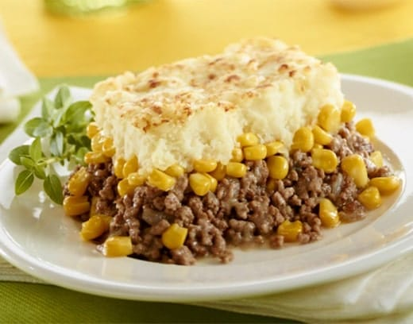

Pate chinois vegane

Presentation
Une recette simple de pate chinois qui procure du reconfort tout en etant
100% vegane.
Conseils
Afin d'epater la galerie, il est tres important de saler l'eau de cuisson des patates. De plus, il n'est pas conseille de remplacer le sans-viande pour une autre marque que celle de Impossible.
Ingredients
- 680g de sans-viande hachee Impossible* (2 paquets)
- 10 patates blanches pelees et coupees en cube
- 1/4 de tasse de beurre vegane
- 1/2 de tasse de lait vegetal
- 1 onion jaune coupe finement
- 1 canne de mais entier
- 1 canne de mais cremeux
- paprika au gout
Preparation
- Faire cuire les patates dans l'eau salee jusqu'a ce qu'elle soient tendre, enlever l'eau et laisser reposer dans la casserole.
- Piler les patates dans la casserole, ajouter 3 cuillere a soupe de beurre et ensuite ajouter progressivement le lait.
- Prechauffer le four a 375F
- Faire saute les onions dnas la poele avec le beurre restant. Ajouter le sans-viande et faire cuire jusqu'a ce que le tout soit bien dore.
- Etaler le contenu de la poeple dans un gros plat allant au four. Ensuite, couvrir avec les deux cannes de mais de facon uniforme. Enfin, recouvrir le tout avec les papates pilees.
- Soupoudrer l'oeuvre d'art avec du paprika et la mettre dans le four pour une duree de 30min.
- Laisser reposer pendant 10 minutes et servir avec une tite beer de boyz du boyz pi pas de ketchup.
Retour a la page principale